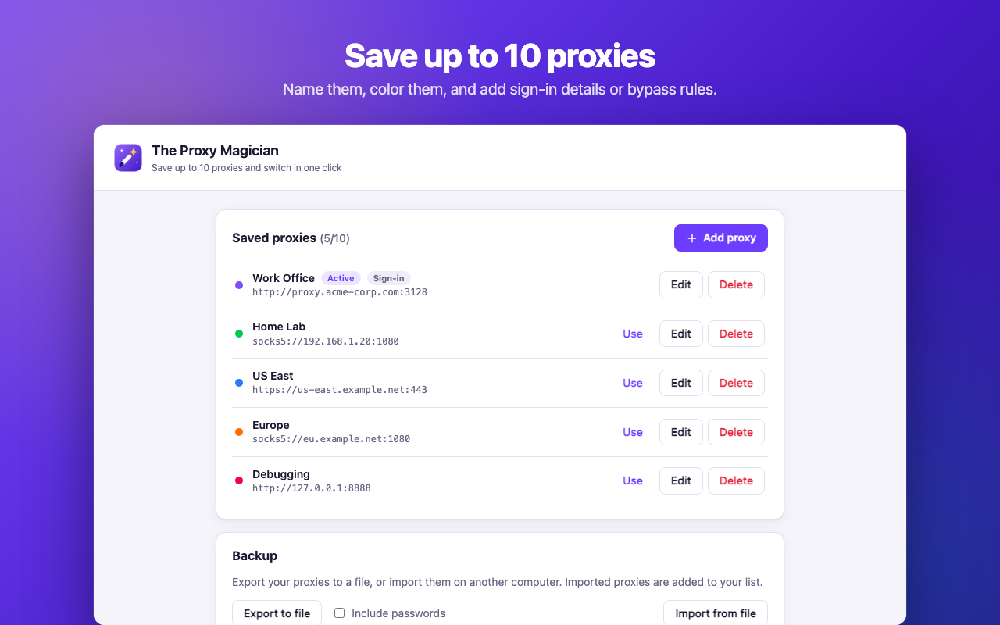
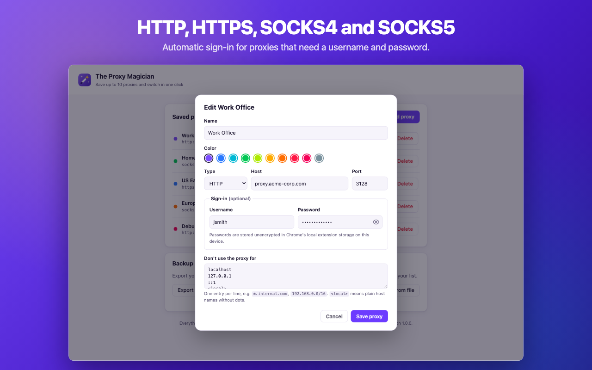

Overview
Developers, testers and people who move between networks often need to change Chrome's proxy many times a day. Chrome sends you to your operating system's settings to do it. The Proxy Magician puts it one click away in the toolbar, and the badge always shows how you're connected.
One-click switching
Pick any saved proxy from the toolbar popup, or turn the proxy off with System or Direct mode.
Up to 10 profiles
Each proxy gets its own name and color. The badge shows the first letters of the active proxy's name in its color.
Automatic sign-in
Saved usernames and passwords are entered for you when an HTTP or HTTPS proxy asks for them.
Bypass rules
Each proxy has its own list of addresses that skip it, such as localhost, *.internal.com or 192.168.0.0/16.
Clear warnings
It tells you when another extension or a policy controls your proxy, and when the proxy fails to connect.
Import & export
Back up your proxies to a JSON file and move them to another computer. Passwords are only included if you ask.
Screenshots
The popup is for quick switching. The settings page is where you add, edit and back up proxies. It supports light and dark mode.




How it works
Built on Manifest V3 with no frameworks or build step. One service worker owns every change to the browser's proxy setting. The pages only send it requests.
Engineering notes
A few problems that took more than one try.
Asking for less permission
Answering a proxy's login request needs access to all sites, which shows Chrome's strongest install warning. The Proxy Magician makes that access optional. It only asks when you save a proxy with a username, and it re-registers its sign-in listeners as soon as you grant it. People who don't use proxy passwords never see the warning.
A badge that never lags behind
Testing in a real browser showed the badge was always one switch behind. Changing the proxy fired a settings-change event that read the saved state before the new state had been written. Now the state is saved first, then the proxy changes, and the old state is restored if Chrome rejects the change.
No sign-in loops
If a saved password is wrong, a careless extension can keep sending it forever. The Proxy Magician counts attempts per request and stops after two, so Chrome shows its own login prompt instead.
Edits apply right away
The service worker watches storage. Editing the active proxy applies the change immediately, and deleting it switches back to system settings, so Chrome is never left pointing at a proxy that no longer exists.
Screenshots made from the real interface
The store screenshots and promo tiles are made by a script. It loads the real popup and settings pages into headless Chrome with a fake chrome.* API, so the images always match the shipped interface.
Permissions & privacy
Your proxies are stored only on your device. The extension makes no network requests of its own and collects nothing. Read the full privacy policy.
| Permission | Used for |
|---|---|
proxy | Setting Chrome's proxy to the profile you pick. |
storage | Saving your proxies locally on your device. |
webRequest + webRequestAuthProvider | Answering proxy login requests with your saved credentials. |
| All sites (optional) | Requested only when a proxy has a username. Chrome needs it to answer proxy logins. No page content is read or changed. |
Tech stack
Small and easy to review, with no build step and no third-party code.
- Chrome Extensions Manifest V3
- Vanilla JavaScript
- HTML & CSS (custom properties, light/dark)
- chrome.proxy
- chrome.webRequest (async auth)
- chrome.storage
- chrome.permissions
- Headless Chrome for asset generation
- Bash build scripts